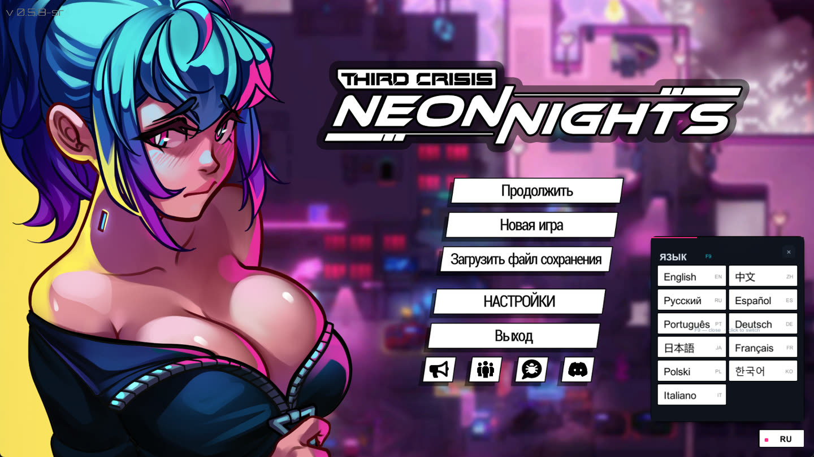
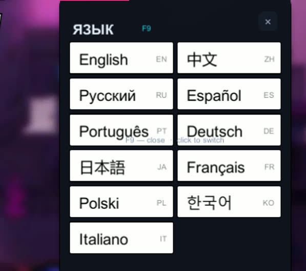

Меню и интерфейс
Главное меню, настройки, кнопки, подсказки и экраны загрузки.
Неофициальный перевод · Anduo Games
Русский и ещё девять языков для Third Crisis: Neon Nights. Текст подменяется в памяти игры: файлы игры не меняются, озвучка и графика остаются студийными.
Сборка 2026.11.26: установщик (exe) и ручной архив публикуются в GitHub Releases. Менеджер ставит, обновляет и удаляет перевод одним окном; ручной архив ставится распаковкой за три шага.
Перевод идёт по текстовым данным игры: меню, диалоги, интерфейс, описания предметов и квестов. Картинки и звук не трогаем.
Главное меню, настройки, кнопки, подсказки и экраны загрузки.
Реплики, мысли, описания сцен и предметов — весь сюжетный текст.
Курсив, цвет, размер и TMP-теги сохраняются: 2 374 строк с разметкой собираются заново, а не теряются.
Roboto Condensed для латиницы и кириллицы, Noto Sans SC/JP/KR для китайского, японского и корейского. Глифы сверены с корпусом переводов.
Панель языка открывается по F9; выбор пишется в active_lang.txt и применяется без перезапуска игры.
Рабочие файлы мода — только dwmapi.dll и папка mods/NeonTranslatorDX/. Steam-верификация не перекачивает файлы игры.
Десять языков перевода плюс английский оригинал. Порядок — по языковой статистике Steam (config/language-priority.mts); покрытие считается из po/<lang>.po при каждой сборке.
Английский — оригинал: словарь не нужен, игра запускается как есть.
Живая игра, не макеты: главное меню до и после, панель языка и проверка шрифтов.





Два пути — установщик (exe) и ручной архив. Оба дают одну и ту же раскладку, ставятся поверх и удаляются без следов.
Найдёт игру в Steam, проверит версию, скопирует файлы и сможет удалять мод, не оставляя мусора. Готовится к релизу.
Распаковать архив в папку игры, запустить install.ps1, запустить игру. Подходит, если политика антивируса не любит exe.
Скачать архив<game>/
dwmapi.dll
mods/NeonTranslatorDX/
NeonTranslatorDX.dll
dwmapi_real.dll
patch_zh.dat … patch_it.dat
fonts/
active_lang.txt
install-manifest.json
NeonTranslatorDX.log
Вне папки mods/NeonTranslatorDX/ — только загрузчик dwmapi.dll. При ручной установке рядом появляются install.ps1 и README-INSTALL.md; после установки их можно удалить.
Удалите dwmapi.dll и папку mods/NeonTranslatorDX/ (при ручной установке — ещё install.ps1 и README-INSTALL.md) — игра вернётся к английскому. Сохранения и файлы игры не затрагиваются. После Steam → «Проверить целостность» игра не перекачивает ни одного файла.
Это ожидаемо: проверка целостности убирает файлы, которых нет в составе игры. Папка мода остаётся; повторно запустите install.ps1 или установщик — перевод снова на месте.
Нет. Это небольшой загрузчик перевода: он подхватывает NeonTranslatorDX.dll при старте игры и не ходит в сеть. Эвристика антивирусов иногда помечает подмену системной DLL. Добавьте папку игры в исключения, восстановите файл из архива и запустите install.ps1.
Проверка целостности стирает всё, чего нет в оригинальной игре, — это нормально и как раз доказывает, что файлы игры не меняются. Папка mods/NeonTranslatorDX/ обычно остаётся. Запустите install.ps1 ещё раз (или установщик) — файл вернётся.
Нажмите F9 или откройте панель языка из главного меню. Выбор применяется сразу и пишется в mods/NeonTranslatorDX/active_lang.txt. Английский — это native-режим без словаря.
В mods/NeonTranslatorDX/NeonTranslatorDX.log. При запуске там должны быть строки Lang: ru, source: ...patch_ru.dat и Translations: больше нуля. Если файла нет — загрузчик не подхватился.
Набор файлов один и тот же. Установщик сам найдёт игру, проверит версию и сможет удалять мод; ручной архив делает то же самое через install.ps1 и подходит для портативных установок.
Неофициальный фанатский мод, не связанный с Anduo Games. Все права на игру и её контент принадлежат Anduo Games. Для использования нужна лицензионная копия. Контент 18+: перевод сохраняет взрослые сцены и лексику без цензуры и смягчений.